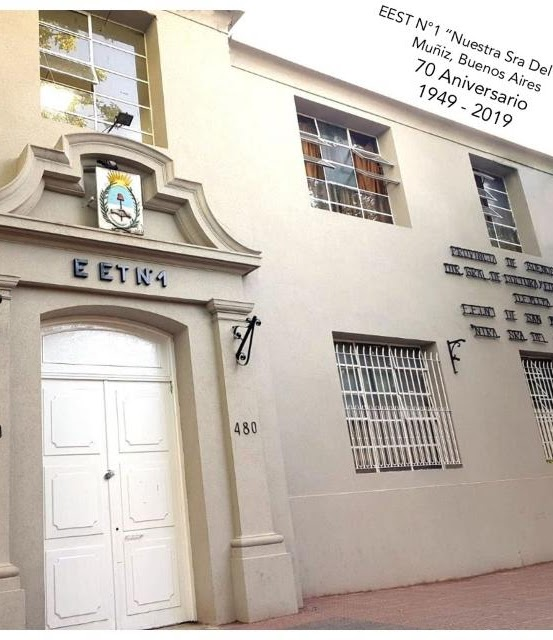
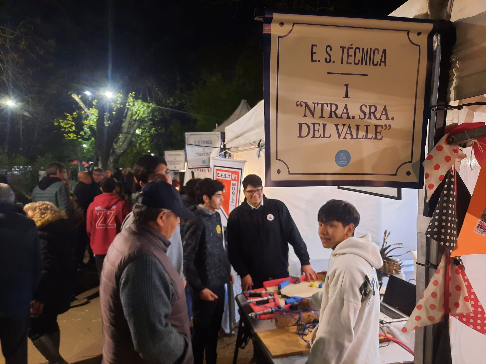
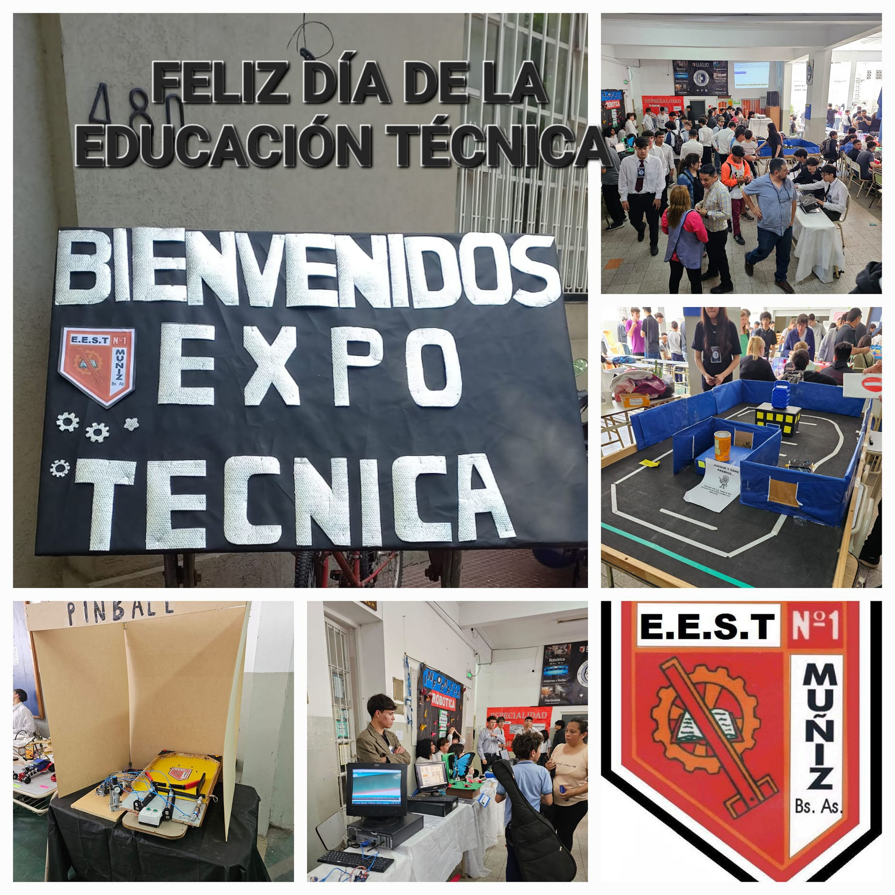
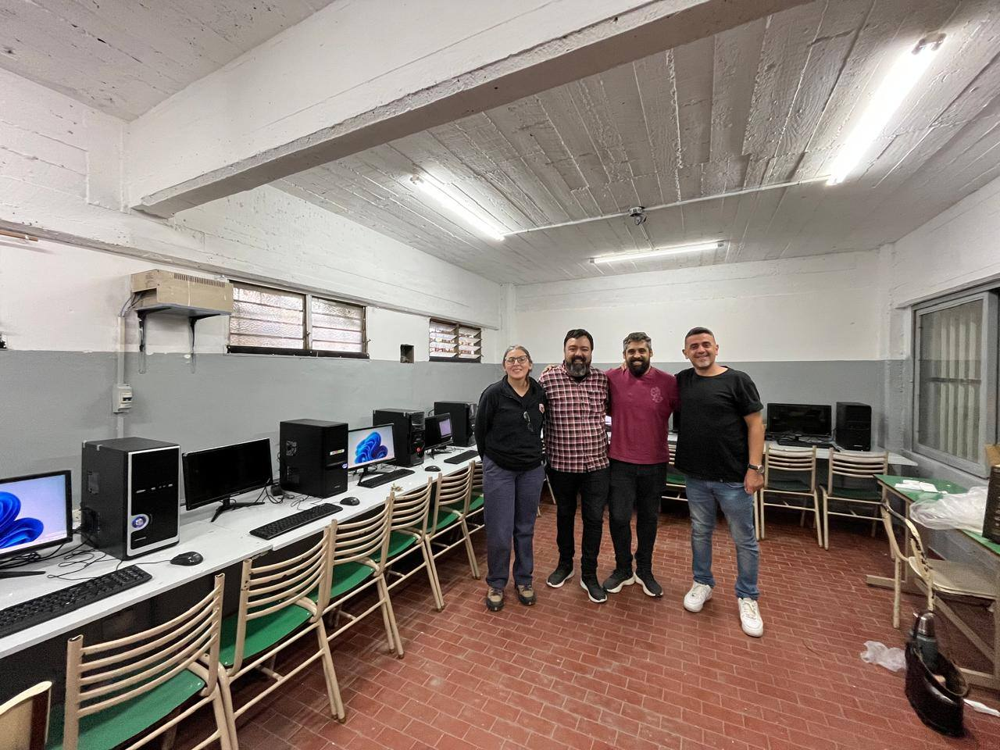
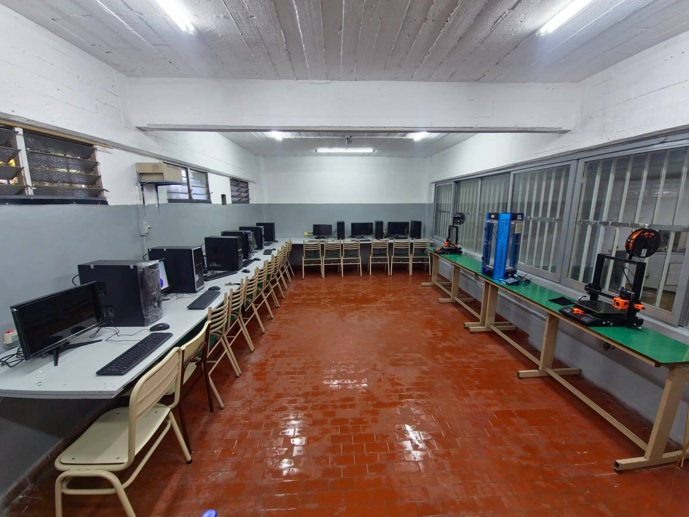

0+
Años de historia
0
Año de fundación
0
Especialidades técnicas
0+
Egresados históricos
Sobre la institución
Fundada en 1949, la E.E.S.T. N°1 "Nuestra Señora del Valle" es una institución pública de gestión estatal con más de 75 años formando técnicos en Muñiz, Buenos Aires. Su primer director fue el ingeniero José Cosentino, y comenzó con 196 alumnos en seis divisiones. En 1964 adoptó oficialmente su nombre actual por resolución N° 1164-c/64.






¿Qué hacemos?
Proyectos reales
Aplicamos los conocimientos en trabajos prácticos concretos desde el primer año.
Talleres equipados
Espacios con herramientas y maquinaria real para aprender haciendo.
Formación técnica
Experiencias que preparan directamente para el mundo laboral y universitario.
📍 Ubicación y Contacto
📍 Dirección: Farías 480, Muñiz
🏙️ Partido: San Miguel, Buenos Aires
📞 Teléfono: (011) 4664-0516
🏛️ Tipo: Gestión pública estatal
📅 Fundación: 1949
🌐 Dependencia: DGCyE — Prov. Bs. As.